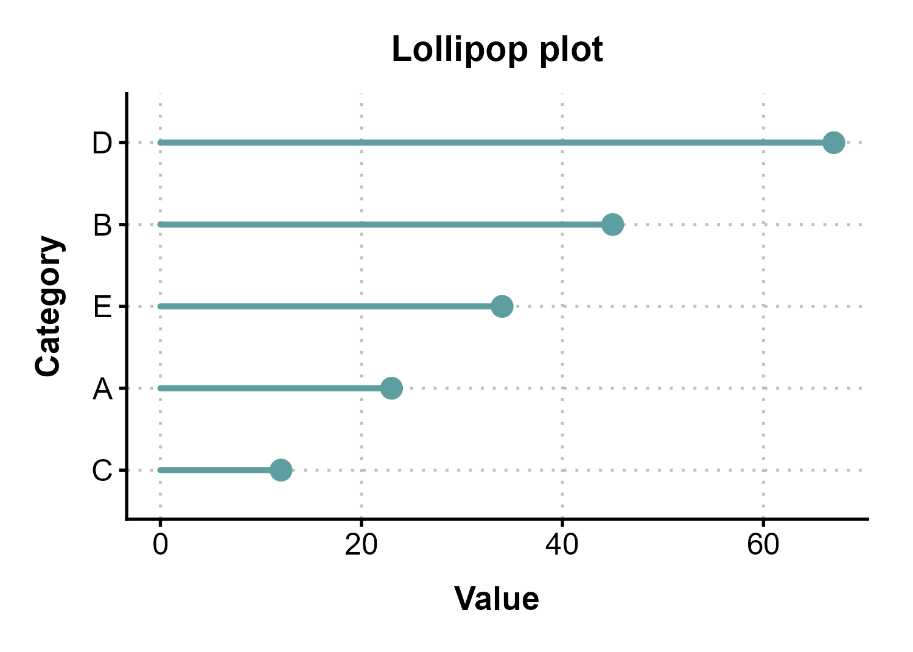
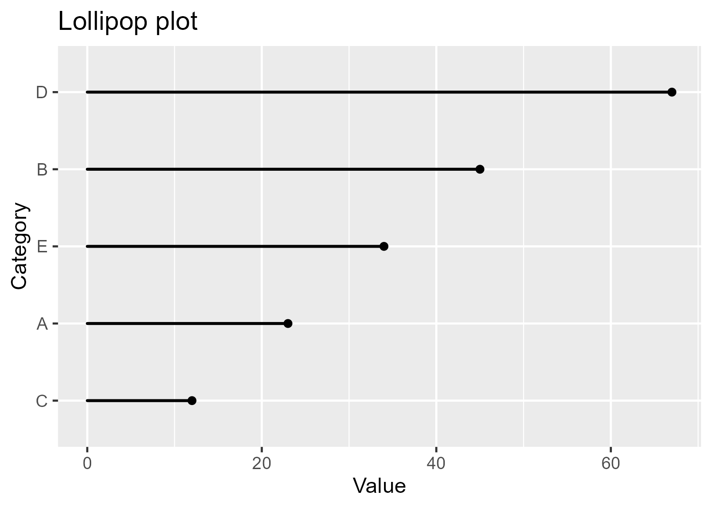

highstyle: A personal R package for consistent visualisations
Motivation
- Create data visualisations with consistent styling without having to re-write the same code for every project.
- Ensure that exported visualisations will remain consistent in both sizing and quality.
- Easily share and re-use across different projects -> R package format.
Design choices & Methods
- Create a theme with intentional choices:
> Grid lines that guide the eye without overwhelming.
> Clear typography hierarchy between the titles, subtitles, axis labels, and legend.
> Well-defined margins and paddings for all plot elements. - Employ geometry wrappers that already encode common styling choices that still accepting ggplot2 standard arguments so that any default option can be overridden if needed.
- Provide a custom function to save plots, ensuring consistent aspect ratios and image resolution.
Code comparison
Side-by-side example of creating the same plot without and with the package.

Without package
ggplot(df) +
geom_segment(aes(x = 0, xend = value,
y = category, yend = category),
color = "cadetblue", linewidth = 0.9) +
geom_point(aes(x = value, y = category),
color = "cadetblue", size = 3.5) +
labs(x = "Value", y = "Category",
title="Lollipop plot") +
theme_classic(base_size = 12) +
theme(
plot.margin = grid::unit(c(14, 18, 14, 14), "pt"),
panel.grid.major = element_line(color = "gray",
linetype = "dotted"),
panel.grid.minor = element_blank(),
axis.text.y = element_text(size = 11),
plot.title = element_text(size = 14,
face = "bold",
hjust = 0.5,
margin = margin(b = 10)),
axis.text = element_text(size = 12),
axis.title.x = element_text(size = 13,
face = "bold",
margin = margin(t = 10)),
axis.title.y = element_text(size = 13,
face = "bold",
margin = margin(r = 10)),
axis.line = element_line(linewidth = 0.6),
axis.ticks = element_line(linewidth = 0.6)
)With highstyle package
ggplot(df) +
geom_lollipop_highstyle(aes(x = 0, xend = value,
y = category, yend = category)) +
labs(x = "Value", y = "Category",
title="Lollipop plot") +
theme_highstyle()Theme comparison
ggplot2 default

highstyle package
Theme design choices
- Removed the coloured background for a cleaner look.
- Use of major grid lines to guide the eye to the data but keeping them subtle (grey and dashed).
- Font sizes selected to ensure readability and create a clear hierarchy.
- Intentional typeface choices to enhance readability and work well with any operating system.
- Well-defined margins to create a balanced and visually appealing layout.